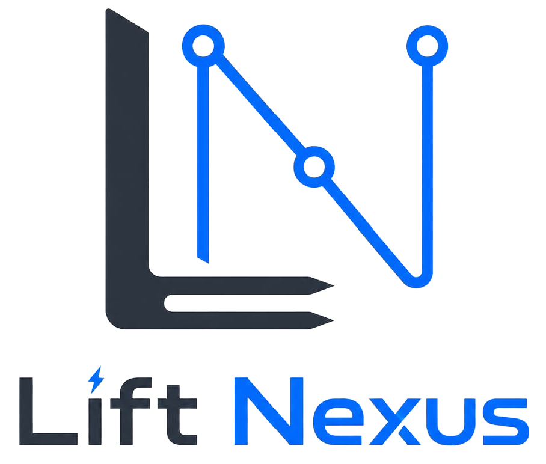

Warehouse dispatch optimization, documented clearly.
Lift Nexus API is a Spring Boot backend MVP for warehouse dispatch optimization. It combines domain modeling, asynchronous job handling, PostgreSQL/Flyway persistence, integration testing, and Timefold-based constraint solving.
Project Overview
This project was built to go beyond simple CRUD applications and explore how optimization can be integrated into a maintainable backend architecture.
- Warehouse domain model with forklifts, load units, storage bins, and transport orders
- Asynchronous dispatch jobs with status tracking
- Constraint-based assignment planning with Timefold
- PostgreSQL persistence, Flyway migrations, and integration testing
Tech Stack
Project Documentation
Documentation pages describing the current system, architecture decisions, domain model, optimization approach, API usage, testing strategy, and roadmap.
Documentation Home
Start here for an overview of the project and the available documentation.
DocsArchitecture
Learn about the modular monolith structure, module boundaries, and key architectural decisions.
DocsDomain Model
Understand forklifts, load units, storage bins, transport orders, and dispatch jobs.
DocsOptimization Approach
See how Timefold is used for assignment planning and how constraints are structured.
DocsAPI Usage
Follow the typical flow: prepare data, start a dispatch job, poll status, and inspect results.
DocsTesting Strategy
Read about unit tests, integration tests with PostgreSQL/Testcontainers, and code quality checks.
DocsKnown Limitations
See the current MVP scope, simplifications, and the areas that are intentionally still incomplete.
DocsRoadmap
See the current milestones and how the project is planned to evolve over time.
DocsGenerated Reports
Automatically generated documentation and reports from the current build pipeline.
API Reference
Interactive OpenAPI documentation with request details and endpoint exploration.
Live DocsTest Coverage
JaCoCo coverage report showing which code paths are exercised by the test suite.
CI ReportJavadoc
Generated class and method documentation for the current codebase.
CI ReportTest Results
Surefire test output from the latest build, including executed tests and pass/fail results.
CI Report